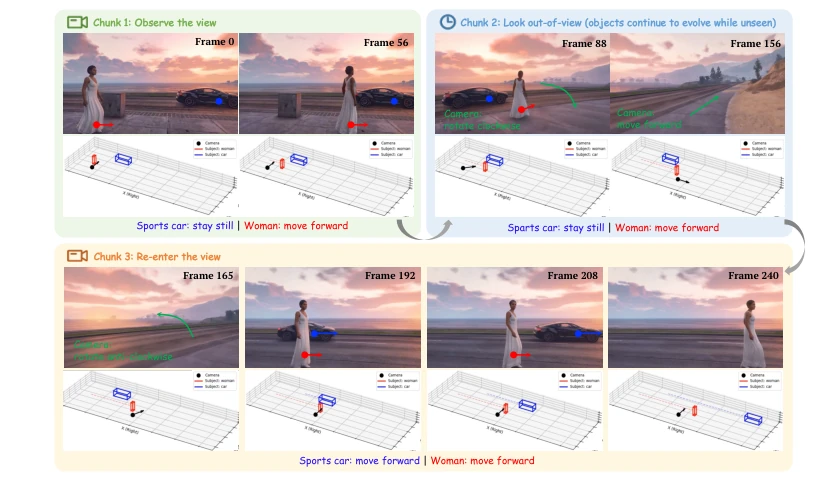
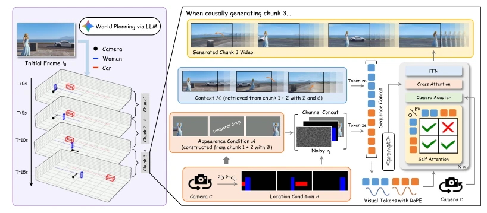
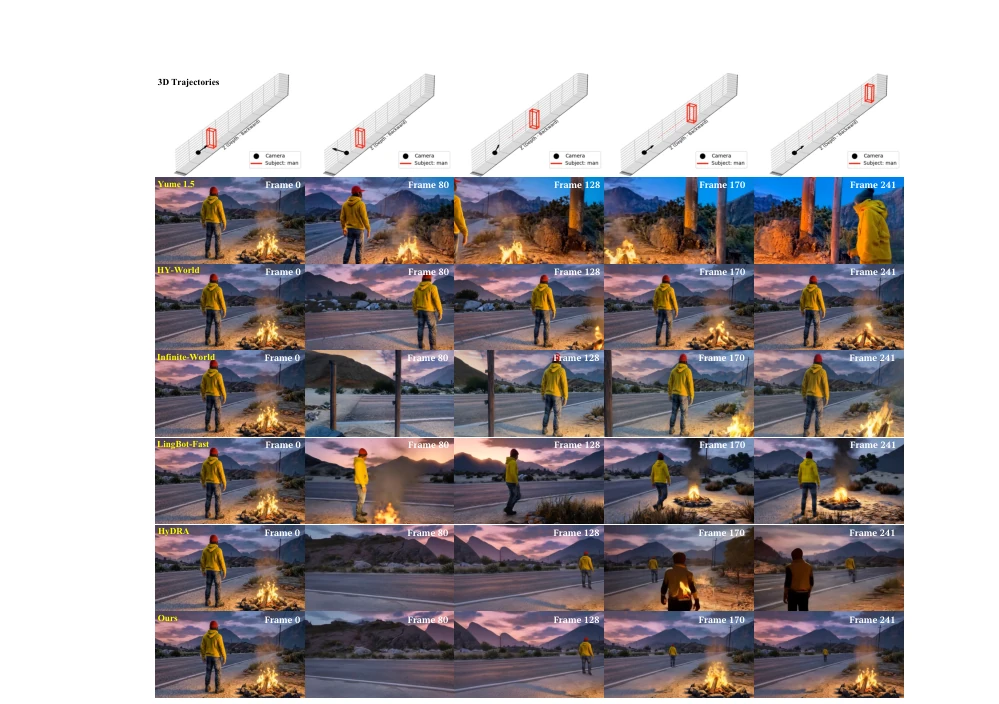
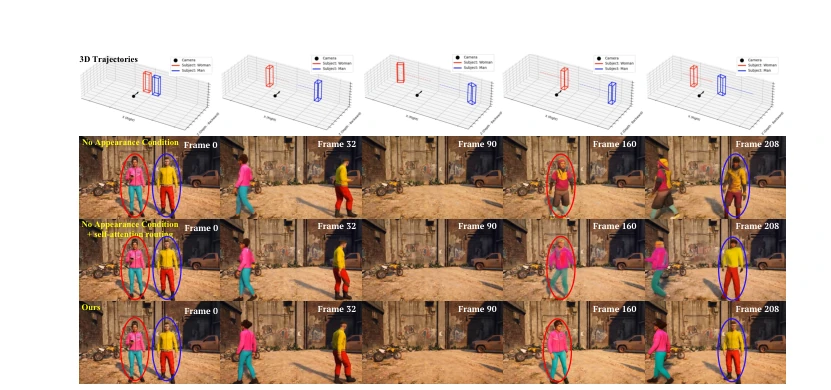
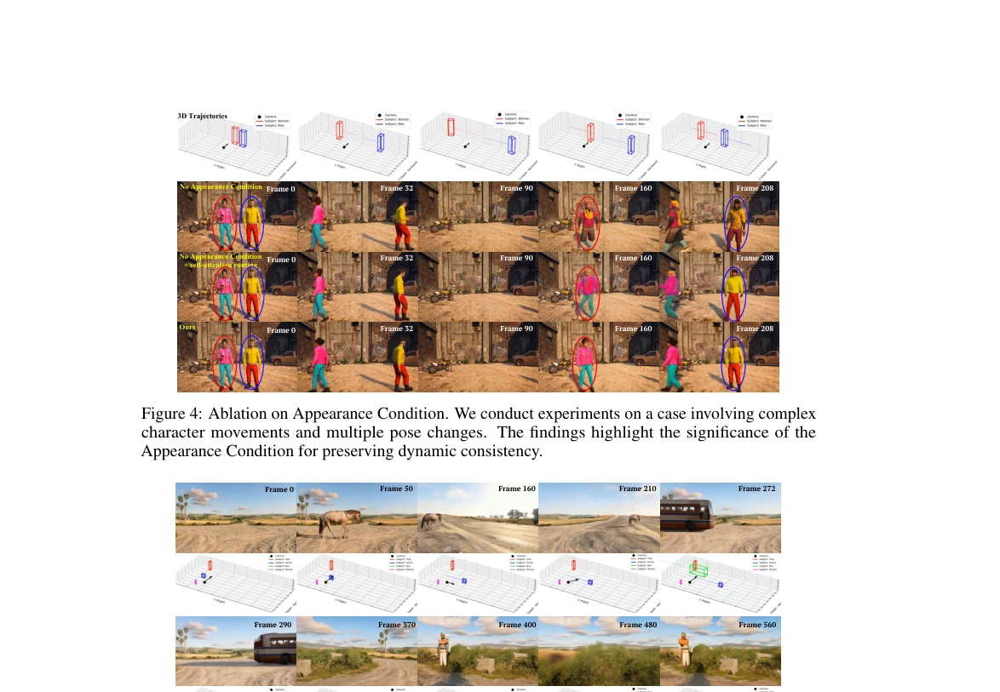

这篇论文给视频世界模型开了个‘外挂’，用 LLM 规划 3D 轨迹来强行维持物体存在，算是把‘物体恒存性’这个物理常识硬塞进了生成模型里。虽然解决了物体出门后‘变身’或‘消失’的尴尬，但依赖游戏合成数据导致真实感不足，人脸模糊、动作僵硬是硬伤。与其说是真正的世界理解，不如说是‘轨迹引导的绘图’，不过对于需要长视频一致性的应用，这招确实比纯靠猜的模型靠谱。它证明了显式控制比隐式记忆更有效，但域差距问题提醒我们，合成数据终究不是真实世界的完全替身，未来还得靠真实数据来打磨，否则在真实机器人部署时可能会遇到意想不到的物理规律冲突。
This paper equips video world models with an "external cheat", using LLM to plan 3D trajectories to forcibly maintain object existence, essentially forcing the physical common sense of "object permanence" into generative models. Although it solves the awkwardness of objects "transforming" or "disappearing" after leaving the view, relying on game synthetic data leads to insufficient realism; blurry faces and stiff actions are critical weaknesses. Rather than true world understanding, it is more like "trajectory-guided drawing", but for applications requiring long video consistency, this approach is indeed more reliable than models relying purely on guessing. It proves that explicit control is more effective than implicit memory, but the domain gap issue reminds us that synthetic data is ultimately not a complete substitute for the real world. In the future, it still relies on real data for refinement; otherwise, unexpected physical law conflicts may be encountered during real robot deployment.
研究动机Motivation
现有视频世界模型（如 Sora [8], Genie [9]）常将物理动态与像素渲染纠缠，导致物体离开视野（OOV）后状态丢失，出现冻结或身份错乱。HyDRA [12] 依赖生成先验，长遮挡易轨迹坍塌；Liveworld [16] 显式监控开销大。本文旨在解耦语义编排与视觉生成，确保动态实体在不可见时仍按物理逻辑运动，且重入视野时身份细节不失真。这不仅是技术挑战，更是迈向交互式环境模拟的关键一步，因为真正的世界模拟器必须理解物体即使看不见也依然存在并运动，否则无法支持复杂的长程任务规划与具身交互。
Existing video world models (such as Sora [8], Genie [9]) often entangle physical dynamics with pixel rendering, leading to state loss after objects leave the field of view (OOV), resulting in freezing or identity confusion. HyDRA [12] relies on generative priors, where long occlusions easily lead to trajectory collapse; Liveworld [16] has high overhead for explicit monitoring. This paper aims to decouple semantic orchestration from visual generation, ensuring dynamic entities still move according to physical logic when invisible, and identity details remain undistorted when re-entering the field of view. This is not only a technical challenge but also a key step towards interactive environment simulation, because a true world simulator must understand that objects exist and move even when unseen, otherwise it cannot support complex long-range task planning and embodied interaction.

Figure 1: Controllable world simulation with persistent dynamic memory via WorldDirector. By decoupling 3D semantic orchestration from latent video synthesis, our framework autoregressively generates long-horizon videos via causal chunks, ensuring rigorous dynamic memory and object permanence. Please refer to the video results on our project page for intuitive demonstrations.
方法Method
WorldDirector 采用 LLM 规划与因果生成结合。LLM 预测 3D 轨迹并投影为 2D 位置条件（B），同时从上下文检索 RGB 特征构建外观条件（A）。模型将 B 和 A 通道拼接至噪声潜变量，A 引入‘时间裁剪（Temporal Drop）’防止过拟合外观。上下文记忆（M）通过序列拼接和不对称注意力注入，确保历史帧稳定。最后通过因果自回归分块生成，递归更新条件，实现长视界探索。具体而言，位置条件通过颜色编码区分实体，外观条件通过特征锚点保持身份，时空上下文通过 RoPE 偏移和注意力掩码隔离噪声。这种架构确保了在长序列生成中，物体运动符合物理逻辑，且视觉细节不随时间衰减，解决了传统扩散模型在长视频生成中常见的‘记忆漂移’问题，为可控视频生成提供了新的范式。
WorldDirector adopts a combination of LLM planning and causal generation. LLM predicts 3D trajectories and projects them into 2D position conditions (B), while retrieving RGB features from context to construct appearance conditions (A). The model concatenates channels B and A to noise latent variables, and A introduces "Temporal Drop" to prevent overfitting appearance. Context memory (M) is injected via sequence concatenation and asymmetric attention to ensure historical frame stability. Finally, through causal autoregressive block generation, conditions are recursively updated to achieve long horizon exploration. Specifically, position conditions distinguish entities through color coding, appearance conditions maintain identity through feature anchors, and spatiotemporal context isolates noise through RoPE offset and attention masks. This architecture ensures that in long sequence generation, object motion conforms to physical logic, and visual details do not decay over time, solving the common "memory drift" problem in traditional diffusion models for long video generation, providing a new paradigm for controllable video generation.

Figure 2: Overview of WorldDirector. An LLM orchestrates 3D trajectories that are projected into 2D Location Conditions for causal chunk generation. Location (B) and Appearance (A) conditions are channel-concatenated with the noisy latent, while historical Context (M) is sequence-concatenated. During generation, temporal drop is applied and an asymmetric attention routing prevents noise from polluting the context memory.
Based on a synthetic game dataset (15s video, scripted OOV), test set 100 samples. Compared with Yume 1.5 [32], HY-World [24], HyDRA [12], etc. Metrics include PSNR/SSIM/LPIPS and DSC. WorldDirector significantly outperforms HyDRA on DSC, proving re-entry identity retention capability. Ablation shows removing appearance condition leads to identity loss. But synthetic data causes domain gap, real scene faces are blurry. Experiments also show that even without explicit position conditions, the model cannot automatically learn appearance consistency, verifying the necessity of explicit condition injection. Overall, this method achieves a balance in controllability and consistency, providing new ideas for long video generation, but domain adaptation issues still need to be solved before real-world application.

Figure 3: Qualitative comparison with baselines. Note that HyDRA uses the initial 10s of our results as a reference video for its generation. Please refer to the video results on our project page for intuitive demonstrations.

Figure 4: Ablation on Appearance Condition. We conduct experiments on a case involving complex character movements and multiple pose changes. The findings highlight the significance of the Appearance Condition for preserving dynamic consistency.
其他图片Other Figures

Figure 5: A generation example of Promptable World Events.